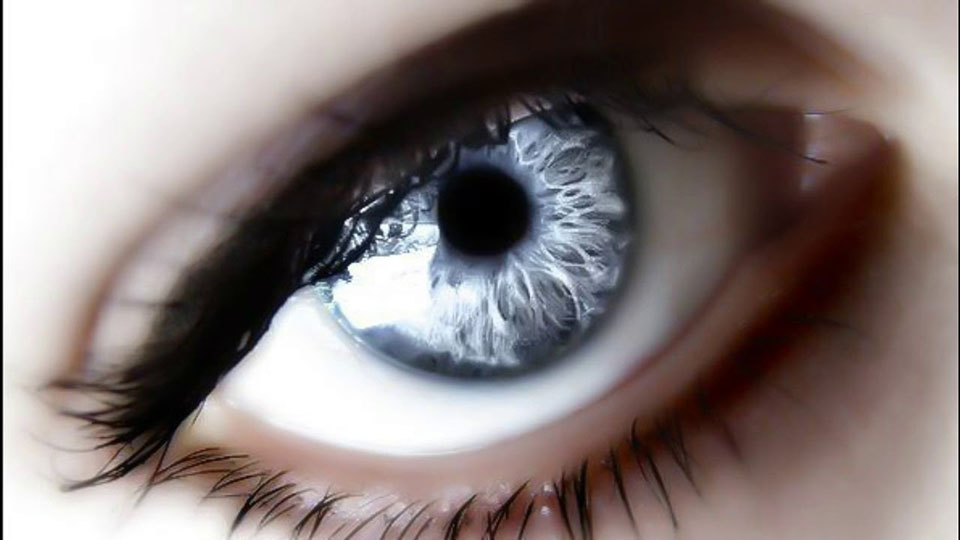
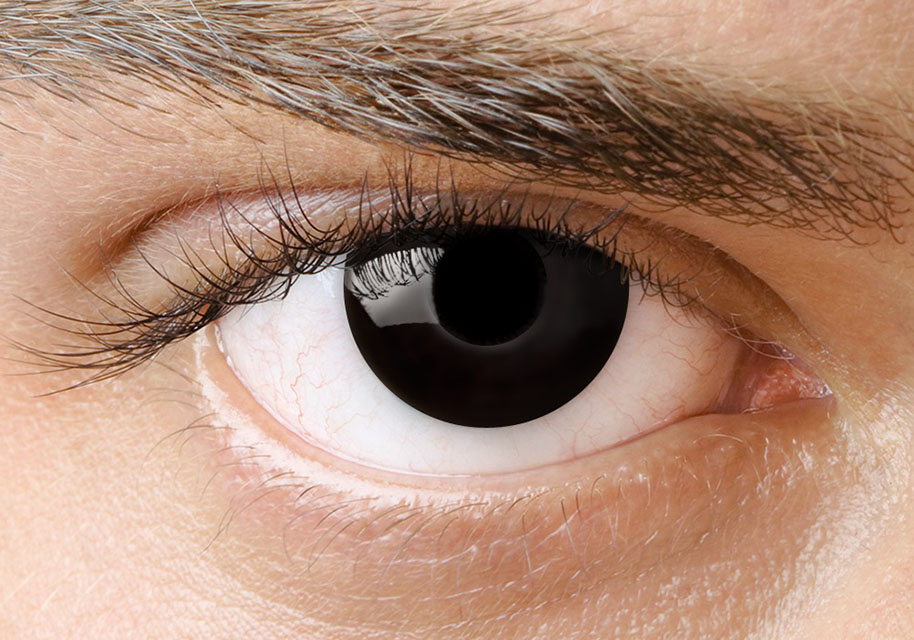
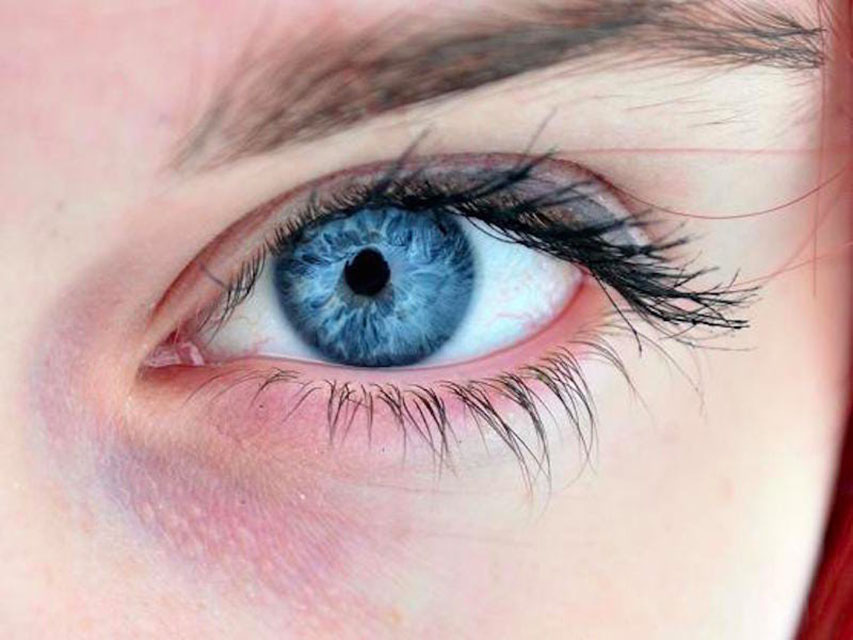
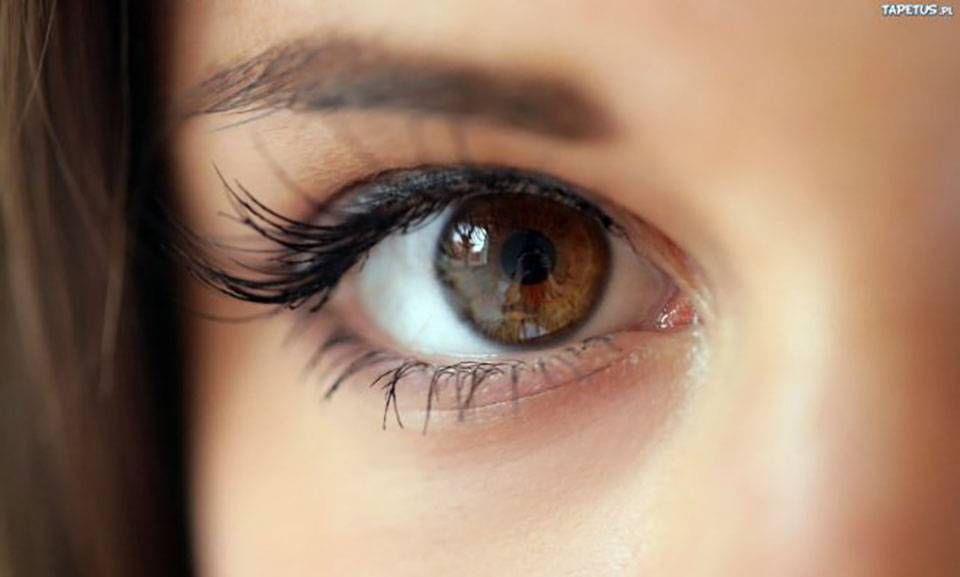

Серые глаза — рассвет,
Пароходная сирена,
Дождь, разлука, серый след
За винтом бегущей пены.

Чёрные глаза — жара,
В море сонных звёзд скольженье,
И у борта до утра
Поцелуев отраженье.

Синие глаза — луна,
Вальса белое молчанье,
Ежедневная стена
Неизбежного прощанья.

Карие глаза — песок,
Осень, волчья степь, охота,
Скачка, вся на волосок
От паденья и полёта.
Нет, я не судья для них,
Просто без суждений вздорных
Я четырежды должник
Синих, серых, карих, чёрных.
Как четыре стороны
Одного того же света,
Я люблю — в том нет вины —
Все четыре этих цвета.